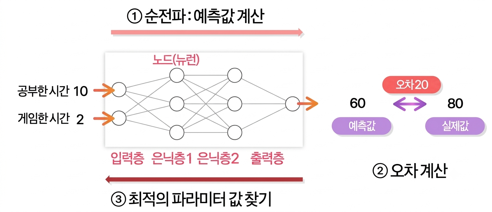
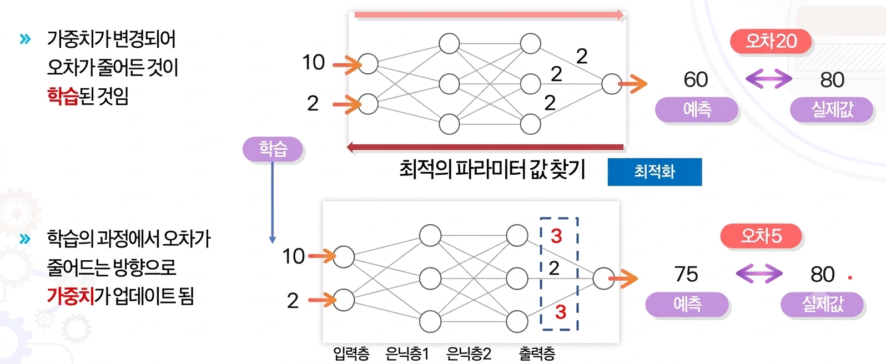

딥러닝의 학습 방법
AICE Junior - 인공지능 모델이 스스로 똑똑해지는 원리
📌 딥러닝에서의 학습이란?
인공지능 모델 학습의 핵심은
오차를 줄이는 규칙과 함수를 찾는 것
입니다[cite: 1].
오차 정의:
$\text{실제값} - \text{예측값}$[cite: 1]
모델이 예측한 값과 실제 데이터 간의 차이(오차)를 계산하고, 이 오차를 최소화하는 방향으로 가중치와 편향을 지속적으로 수정합니다[cite: 1].
📈 회귀 분석과 오차 개념 시각화
X
Y
예측값
실제값-예측값
실제값
오차의
제곱값
⚙️ 최적화 (Optimizer)
최적화(Optimizer)란
오차가 작은 방향으로 파라미터(가중치, 편향(bias)) 값을 조절하는 알고리즘
입니다.
최적화 알고리즘은
adam, rmsprop, sgd
등의 방법이 있으며 주로
adam
이 사용됩니다.
Optimizer
adam
rmsprop
sgd
🔄 딥러닝의 학습 방법 (1)

🔄 딥러닝의 학습 방법 (2)
